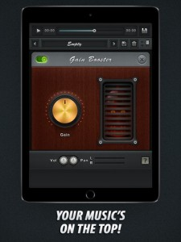
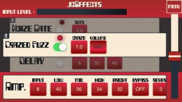
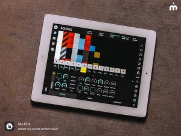
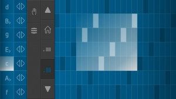
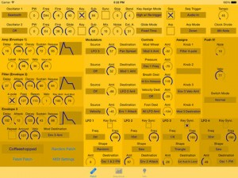
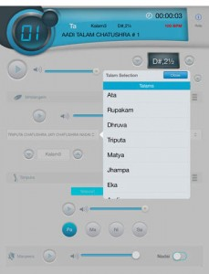
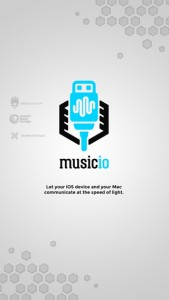
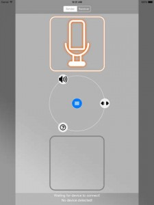
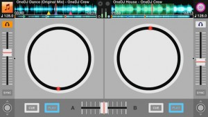

[appext 970345736]FULL VERSION, WITHOUT ADS!
All these simple and useless music boosters are nothing in comparison with this powerful Volume Maximizer Plus app. Best sound tools for perfect sounding are collected here – audio compressor, gain booster, bass booster, stereo enhancer and music equalizer. Fantastic addition to your music creation software!HOW TO USE: Start your work with uploading necessary audio file from device. Then tap on the plus button and choose a filter: from easy equalizer booster to professional sound enhancer for android. In each filter you can control all characteristics that you need by sliders. Use every filter to make your music track sounds perfect and awesome! Also, you can open two, three or more filters at the same time. In the end, don’t forget to save all changes of your masterpiece!
Volume Maximizer Plus features:
– Smart and simple sound tool for musicians and music fans
– Awesome filter’s collection
– Changes saving feature
– Special volume and pitch adjust sliders
– Mind-blowing designSuffering from low quality music is in the past! You can fix it by your own using this fabulous Volume Maximizer Plus. Plunge into music paradise and enjoy it!
Volume Maximizer Plus
jgEffects – unique effects
[appext 951542598]Unique effector app for guitar named “jgEffects” is now on AppStore !
6 distinct types of effector help to escape from humdrum guitar sounds.
supported audio interfaces are iRig, TASCAM iXZ.
the app supports “Inter-App Audio” which works together with GarageBand that kind of apps.++ about Effectors ++
You have a choice between three different effectors and use concurrently with them.The contents of the effectors are as follows.
note : some effectors are in-App purchase item. we have plans adding new effectors in the future.Crazed Fuzz
a featured effector. Fuzz which is characterized by overflow oscillation.
controls：CRAZE, VOLUMEAuto Revolving Wah
a featured effector. it automatically rotates filter that makes wah-wah sounds.
controls：DEEP, SPEED, TYPEHarmonic bot
a featured effector. it changes tone color like a robotic sounds. it’s also awesome for vocalist.
controls：DEPTH, RATE, MIXDry Dryve
Over-Drive which is characterized by dryly harmonic tone.
controls：LEVEL, GAIN, TONE, BALANCENoize Gate
it is a noise-reduction effect.
controls：SENSDelay
we provide standard Delay effector.
controls：BLEND, TIME, FEEDBACK
LK – Live Controller
[appext 944972221]LK – Live Controller (formerly know as LIVKONTROL) is a sophisticated remote controller application for music software and hardware, featuring a tight integration with Ableton Live. Easy customization with 4 independent modules, intuitive use, creative tools and ways to control or compose makes LK a powerful companion for any electronic musician.
See what’s inside:
– Control almost every aspect on Ableton Live, from composition to automation, clips, tracks, devices and much more with MATRIX.
– Get the MPC feel on your touchscreen with MIDI PADS, featuring an arpeggiator and chorder.
– Extensive control through 128 parameters with MIDI Controller.
– Three dimensional parameter tweaking with X/Y padFor detailed operation information and requirements please visit www.livkontrol.com
SoundPrism Electro Mini
[appext 949376253]SoundPrism Electro Mini is a musical instrument for your iPhone or iPod which makes it easy to come up with great chord progressions.
Play full arrangements of bass, harmony and melody with just one tap, making it an indispensable tool for songwriters or electronic musicians looking to add powerful chord progressions to their tracks.
Features:
* New sound engine with rock-solid polyphony and great-sounding effects. SoundPrism Electro’s new sounds are hand-crafted by Swiss sound designer Oliver Imseng to work beautifully with each other.
* Innovative and improved chord input system: effortlessly play inversions and chord progressions while focusing on your track, not on the music theory behind it.
* A ribbon controller for live manipulation of the built-in effects.
* New interactive tutorial system: SoundPrism Electro Mini walks you through its interface and teaches you how to play.
* Supports Audiobus including state saving.
* Supports Core MIDI
Mopho Touch
[appext 968842079]Mopho Touch is a patch editor for the Dave Smith Mopho synthesizer. If you have a Mopho then this is the editor for you! Mopho Touch gives you touch-based control over all of the voice and sequencer parameters on your Mopho synthesizer. Just make a change on the screen, and the change is instantly sent to your synthesizer.
Mopho Touch has been designed to give you access to as much as possible all on a single screen, making it easier to change and understand the structure of your patch.
Here are some more features:
* Copy/Paste envelopes between Amp, Filter, and Envelope 3
* Copy/Paste sequencer track data
* Create random patches
* Copy the current patch from your synth to your iOS device, for further editingUse this app either with a MIDI adapter for your iOS device, or via a wireless MIDI connection to your Mac or PC, with your Mopho synthesizer connected to your Mac or PC via MIDI.
REQUIREMENTS:
* A Dave Smith Instruments Mopho synthesizer
* A MIDI adapter for your iOS device, OR a Mac or PC connected to your Mopho via MIDI and a wi-fi connection between your Mac or PC and your iOS device.NOTE: This app does NOT make any sound! It’s just an editor for your Mopho synthesizer. If you don’t have a Mopho synthesizer, this app won’t do anything useful for you.
This app is not affiliated or endorsed by Dave Smith Instruments. It’s just an app I made to fill a need!
midimux
I’m amazed it’s taken this long really (obviously it’s harder to do than it looks!), but there is now a much simpler way to get your iPad and Mac talking ‘musically’ with each other. All you’ll require is some server software on your mac, this new app, and a standard iOS to USB cable. Read on!
[appext 963133945]
midimux talks MIDI to your Mac – using the standard usb to lightning or 30 pin cable.
Finally.With midimux, you are no longer forced to rely on wifi-packets or external hardware to communicate MIDI data between a Mac and an iOS Device.
It seamlessly integrates your iPad/iPhone into your studio. worry-free, reliable and at an ultra low-latency.
And it works with all apps that speak MIDI.midimux lets you..
– control iOS apps with hardware controllers that are connected to your Mac.
– sequence and play iOS apps using a DAW running on your Mac.
– control Mac applications or hardware connected to it, using Lemur, TouchOSC or any other app that uses MIDI.
– use iOS apps to play and sequence hardware instruments that are connected to your Mac.
– create virtual MIDI ports on the iPad/iPhone that can be mirrored to the Mac or other iDevices.
– connect more than one iOS device to the Mac – and send MIDI data between them.all this wired – via the simple usb to lightning/30 pin cable.
In short: midimux creates virtual copies of MIDI devices connected to the other si.
In long: If you have a MIDI device connected to your Mac, midimux will create a copy of it on the iDevice – and thus allowing other apps to talk to it directly. Any byte of MIDI received by the MIDI device on the Mac will be piped to and received on the virtual copy of that device on the iOS device – and is then usable by its apps.
Data sent out by apps to the virtual copy on the iOS device will be piped back via usb, and then sent to the real device on the Mac.The same is true the other way around. If an app creates a virtual MIDI port (e.G. Animoog), midimux will create a copy of that port on the Mac, naming it ‘Animoog @ iPad’.
If an app does not create a virtual MIDI port, midimux always gives the possibility to create virtual ports manually. these can then be used by any apps on any of the iOS devices to pipe data to the Mac. or other iDevices. or both. and back. at the same time 😉
Features:
– Creates Mirrors of all MIDI devices that are connected to the computer on the connected iOS devices.
– Creates Mirrors of all MIDI devices that are connected to the iOS devices on the Mac.
– Lets you create custom virtual Ports that can be used by both sides of the connection to communicate.
– does it all via a wired usb connection – using the standard charge & sync cable.
– works on all iDevices from iOS 5.*** midimux currently only works with Mac ***
To work, a lightweight server app has to be installed on the Mac.
Download it from here: http://www.midimux.com –
Or find it in this apps documents folder via iTunes file sharing.
iMridangam Manjira Tambura Player
[appext 969483146]Enjoy professional Mridangam,Manjira and Tambura accompaniment with iMridangam ideal for Carnatic/Indian Classical musicians and students.
—————————————————————————————————————–
About iMridangam
First and the only 3 instrument (Mridangam, Manjira and Tambura ) player.
Plays the Mridangam, Manjira & Tambura together synchronously as well as separately. Any Taalam,Jaati,Nadai combination possible.
iMridangam is an app by Mr. Hari Sharma, the maker of Mridanga Taalam, Mridangam & Tambura like Raagini Digital, Swarangini, TaalamTarang & Riyaz Master.
——————————————————————————————————-
———-iMridangam | Mridangam
# Plays Mridangam including Aadi and Chapu Taalams
# Great versatility :pitch with a range form Katti 7 / B to Kattai 7 / B 2nd Octave
# Extensive Taalam list : bouquet of 40 variations of talam’s of the Mridangam.
# A large bouquet of Theka variations in Taalams & Layas including Variation Random mode for realistic accompaniment.
# Laya options of Kalam3, Kalam2 & Kalam1
# Tempo range from 16 to 416 beats per minute
# Separate volume control for Mridangam
# Volume control Thoppi & Valanthalai independent for balancing.
# Displays Taalam bolls,Matra and Riyaz time.
——————————————————————————————————-
———-
iMridangam | Tambura
# Dual Tambura (Either one or both Tamburas can be played together)
# Great versatility with a range form Katti 7 / B to Kattai 7 / B 2nd Octave
# Option of playing PA, MA, NI or SA
# Tempo adjustment
# Hindustani & Carnatic style of playing
# Volume control for individual Tambura string
# Special manual tuning for NI
# Independent volume control for both Tamburas
—————————————————————————————————————–
iMridangam | Manjira
# All total of 200 talams can be played including the 40 variations played in the Mridangam
# Any Taalam, Jaati, Nadai combination possible
# Nadai can be put ON/OFF
# Independent volume control for ManjiraiMridangam
# One app for all your musical needs.
# Real Mridangam Manjira &Tambura, tone
# iPhone, iPad, iPod Touch compatible
# Detailed help file both quick and Full Manual
# Online support at www.soundapps.in website.
# App by Mr. Hari Sharma who for over 20 years has been serving Indian Classical Music by developing electronic Mridangam & Tambura like Raagini Digital, Swarangini, TaalamTarang & Riyaz Master.
Music IO: MIDI over USB
Description
Download the Mac server from the MusicIOapp.com web site. We hope to have this available through the Mac App Store shortly.
—-
Send and receive MIDI between your Mac and your iOS device via USB. It’s simple, reliable, and near-zero latency.THREE TEAMS
Music IO is a joint effort by three of the most respected iOS music app development teams. Confusion Studios makes MIDI Designer Pro, the most-respected MIDI controller platform for iOS. MIDI Designer is adored by users, loved by Music Industry press, and trusted on stages and in studios around the World. Audeonic Apps makes the pioneering MidiBridge app, an essential tool for routing and filtering MIDI messages on iOS; they also provide the MidiBus software library, which powers dozens of successful music apps (including Music IO). The Secret Base Design team has built a range of apps providing high-speed MIDI and audio connections over Bluetooth LE and WiFi, and also develops innovative signal processing apps.The three teams have joined forces to build the only professional USB-MIDI solution that doesn’t require additional hardware. It’s been in development for months, and Music IO will include audio-over-USB soon (iOS 7+). Music IO lets your iOS device become an integral part of a modern professional music production system.
FEATURES
• Send & Receive MIDI between any CoreMIDI apps over USB (Lightning or 30 pin) with no perceptible latency nor jitter
• Large sysex messages (eg. bulk dumps) handled seamlessly
• Choose “send to” ports (OSX and iOS)
• Choose “receive from” (OSX): route MIDI from anywhere to your iOS device
• BridgeClock, a ground-breaking inter-device MIDI-clock-synchronization technology, provides jitter-free sync between platforms
• Runs on iOS 6 or better (10.7+ on OSX)GET CONNECTED
Download the free, companion app from the Mac App Store (musicIOapp.com/mac) and get connected in no time.FUTURE FEATURES
Show your support by downloading Music IO for iOS now at this low introductory price. Early adopters will benefit from these future features at no additional cost:
• Audio over USB: low-latency audio between iOS device and your Mac (iOS 7 or better)
• Comprehensive MIDI device interchange between devices, allow routing to and from specific iOS apps
• Support for multiple iOS devices per Mac with the ability to route between them
• Clocking from Mac
[app 966003016]
SquishWarp
[appext 969083604]Plug your external IOS audio interface you desire and send the recording directly to a plugged amp or other system.
(Mixer, Monitor, Output Headphones, Amps..)The audio data is transfered with lossless 32-Bit and 44.1kHz format for best audio quality. With very low latency with our intuitive design you can start to work immediately, just plug your instrument and open the app on both devices and you are good to go.
Although we know that SquishWarp works seamlessly in every wifi-environment, the latency can be dependend on the model of your router. Router models that support 5Ghz transfer were able to deliver the packets with less than 5ms of latency.
It is Recommended to put the device on airplane mode with wifi mode on. The devices must to be on the same wifi spot and you free to play with very low latency. It is not possible to interconnect the devices over the internet, only inside an internal network.
OneDJ for iPhone
[appext 963131297]Let’s Enjoy DJ by OneDJ.
OneDJ is a professional DJ app. With OneDJ and using your music library in the iPhone, you can enjoy playing DJ anytime, anywhere. The multi-touch user interface is designed as to operate comfortably in one screen, and you can use the same functions by the same operation as a real DJ device. DJ beginners can easily play DJ using various functions.
Connecting a headphone and a speaker to iPhone, the speaker outputs the master sound, and from the headphone, you can monitor the sound that DJing requires for the next mixing.
You can use OneDJ in following ways.
・Bring OneDJ to a party and play DJ quickly.
・Play DJ during a drive with everyone. (If you are driving, please don’t play DJ)
・Record mix of your favorite songs, or make a music.
・When you think about purchasing a real DJ device, for simulated experience.From a DJ beginner to a professional, please do get OneDJ that provides countless uses.
OneDJ is equipped with various functions.
・Control different functions by your touch gestures.
・Load any songs from your own music library.
・Record your DJing sound.
・Touch and control the Turntable to scratch and spin.
・Analyze automatically a beat of a song to sync tempo of the song at one button.
・Use Effects of six types to change sound.
・Key-lock change a playback speed without changing the key.Other Features
・Multi-touch User Interface
・Sharing Recording File
・Back Cue and Hot Cue
・Loopping Play
・Pitch Bend
・Split Output
・Beat Snap
・Manually Setting Beat
・Changing Tempo
・Showing Song Information
・Jumping Playback Position
・Channel Fader and Crossfader
・3-band Equalizer
・Filter (HPF, LPF)
・Setting Fader Curve
・Adjusting Turntable Brake
・Adjusting Turntable Spin
・Inverting Tempo Slider


{kind=link}
{kind=link}
{kind=link}
{kind=link}
{kind=link}
{kind=link}
{kind=link}
{kind=link}
{kind=link}
{kind=link}